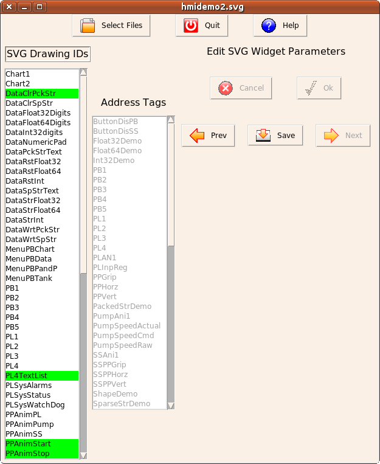
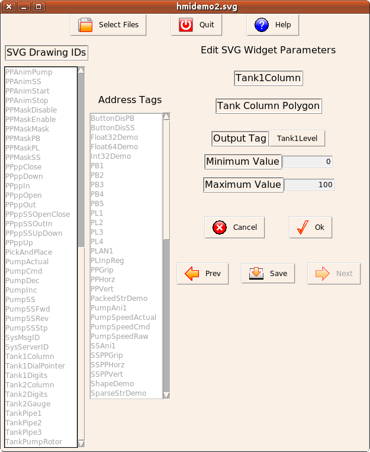
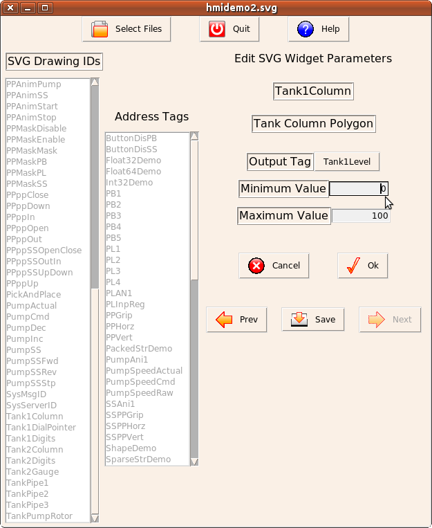
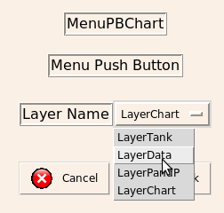
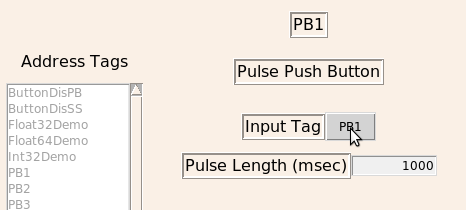
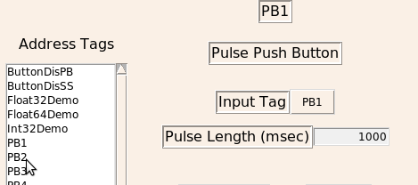
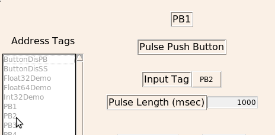

MBLogic
for an open world in automation
MBLogic
for an open world in automation
Edit Widgets
"Edit widgets" allows you to select each HMI widget in the drawing and assign the parameters to it which will be used by the HMI web page to connect it with the data in the server and to animate it according to the type of widget it is.
The program scans the drawing for ids associated with widgets and lists them in the list box on the left side of the window. The ids listed will be the ones which you assigned when you were creating the drawing. If you did not assign an id to something, the default id which Inkscape assigned will be present. This default id will typically be one or more letters followed by a number. If you see something that looks like an id which you do not wish to use, you should save your current work, exit HMIBuilder, and use your drawing editor to assign the correct id.
When you select an id, a menu will appear to the right of the list box. This will contain the parameters associated with the type of widget. The types, names, and numbers of parameters present will depend on the type of widget selected. The information used to create the menus (including the menu names) are stored inside the widgets themselves. This means that if you create a custom widget, HMIBuilder will automatically adapt itself to the new widget.
As you edit each widget, the background colour for each id in the list will change to show that it has been edited. You must edit all the widgets before you can assemble the finished HMI web page. The selections for each widget will be stored inside the drawing with the widget itself. You can save your changes, exit HMIBuilder, edit the drawing with your drawing editor, and resume using HMIBuilder.
Steps
- The ids which you assigned to widgets will appear in a list box on the
left side of the window. Select the first one you wish to work on.

- The parameters for that widget will appear. The names, types, and
number of parameters will depend on the type of widget. The parameters
are discussed in more detail in the section describing each widget.

- Select the parameters that you wish to use.

- Click on the "ok" button when you have finished editing that widget. To cancel an edit, click on the "cancel" button.
- As each widget is edited, the background colour of the widget name in the widget name selection will change to indicate this.
- When all the widgets have been edited, the "next" button will be enabled, allowing you to proceed to the "assemble page".
- If you wish to save your changes, remember to select "save" at this time before proceeding to the "assemble" page.
Editing Values
The widget parameters will be of the following types:
- Address tags
- Integers
- Floating point numbers
- Strings
- Text lists
- Colours
- Layers
Integers, floating point numbers, and strings are simply entered into an edit box. Text lists are lists of alternative text messages which are displayed by text list widgets. These entered by simply typing the list of text messages into an edit box, with each item separated by a comma.
Colours and layers are selected by means of drop down lists.

Address lists are selected by a two stage process. First, click on the current value of the address tag (beside the menu label). This will enable the address selection list box.

Next, click on the name of the address tag you wish to use. This will select the new address tag.

The name of the new address tag will appear beside the parameter label and the address tag selection list box will be disabled again.
